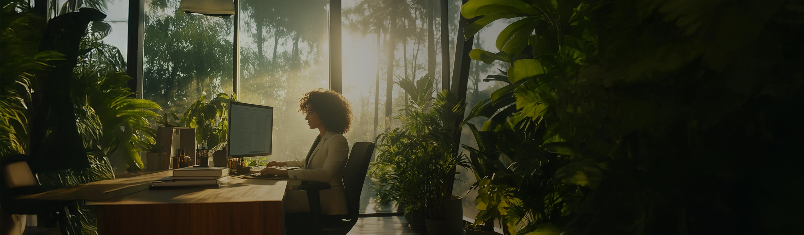
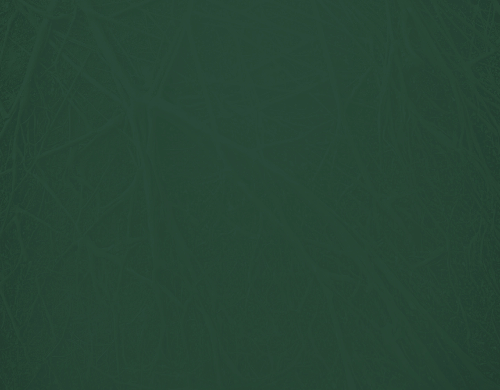

Paleta de cores
Medida no navegador: fundos ponderados pela área ocupada, textos pela quantidade de caracteres. Destaques reúnem cores saturadas e fundos de botão.
Fundos
rgb(41, 74, 57)
rgb(67, 42, 33)
rgb(255, 203, 135)
rgb(39, 27, 23)
rgb(23, 48, 35)
Textos
rgb(255, 245, 220)
rgb(255, 203, 135)
rgb(68, 44, 36)
rgb(255, 255, 255)
Destaques
rgb(41, 74, 57)
rgb(255, 203, 135)
rgb(67, 42, 33)
rgb(39, 27, 23)
rgb(23, 48, 35)
Gradientes
linear-gradient(45deg, rgb(41, 74, 57), rgb(66, 112, 88), rgb(41, 74, 57), rgb(66, 112, 88))Tipografia
Escala usada (desktop 1440px)
| Tamanho | Peso | Família | Amostra |
|---|---|---|---|
| 30px | 800 | Poppins | Texto de exemplo |
| 30px | 900 | Poppins | Texto de exemplo |
| 28px | 800 | Poppins | Texto de exemplo |
| 25px | 300 | Poppins | Texto de exemplo |
| 25px | 800 | Poppins | Texto de exemplo |
| 25px | 500 | Poppins | Texto de exemplo |
| 25px | 700 | Poppins | Texto de exemplo |
| 23px | 300 | Poppins | Texto de exemplo |
| 20px | 300 | Poppins | Texto de exemplo |
| 20px | 500 | Poppins | Texto de exemplo |
Mobile (390px): 28px/900, 25px/700, 25px/500, 25px/800, 23px/800, 19px/800, 18px/200, 17px/500 · H1 no mobile: sem h1 semântico
Tags
| Tag | Família | Tamanho | Peso | Altura de linha | Espaçamento | Caixa | Cor |
|---|---|---|---|---|---|---|---|
| <h2> | Poppins | 18px | 200 | 23.4px | 0.4px | none | #FFF5DC |
| <h3> | Poppins | 25px | 800 | 32.5px | normal | none | #FFCB87 |
| <p> | Poppins | 18px | 200 | 25.2px | normal | none | #FFF5DC |
Botões
Recriados com os estilos computados reais. Efeitos de hover e animação não aparecem aqui; veja a seção de animações.
fundo #294A39 · texto #FFCB87 · raio 10px · padding 22px 22px · 18px/600 none · 2x na páginafundo #FFCB87 · texto #432A21 · raio 10px · padding 16px 22px · 20px/600 none · 1x na páginafundo #294A39 · texto #FFCB87 · raio 10px · padding 22px 22px · 18px/600 none · 1x na páginaCards e containers
Conhecimento Científico como Diferencial.
raio 36px · sombra none · borda 1px solid rgb(255, 203, 135) · 619x188pxAnálise da Sua Carreira Atual Avaliamos sua experiência, suas habilidades e a forma como v
raio 22px · sombra none · borda 2px solid rgb(255, 203, 135) · 367x392pxClique no botão abaixo agora mesmo e se candidate a uma vaga para fazer o seu Diagnóstico
raio 22px 0px 0px 22px · sombra none · borda 1px solid rgb(255, 203, 135) · 720x454pxCom o objetivo de identificar as áreas que precisam de ajustes e apresentar um plano de aç
raio 34px · sombra none · borda 0px none rgb(17, 17, 17) · 481x399pxBordas, raios e sombras
Sombras
Sem sombras relevantes.
Espaçamentos
- Largura do conteúdo mais comum: 1140px
- Padding vertical das seções (topo/base): 0px/0px (10x)
- Gaps mais usados (flex/grid): 20px, 40px, 5px, 30px, 15px
- Altura total da página: 10177px em 10 seções
Estrutura e ritmo de cores das seções
Cada faixa é uma seção de topo, com altura proporcional e a cor ou imagem de fundo real.
Animações, ícones e bibliotecas
- Keyframes próprios: brilho
- Animações de entrada do Elementor: nenhuma
- Classes de scroll reveal da casa: scroll-bottom, scroll-left, scroll-right, scroll-top
- Ícones: 4 SVG, 0 ícones de fonte
- Bibliotecas e tags detectadas: jquery, lottie, meta-pixel, swiper
Snippets da biblioteca presentes nesta página
Imagens do site



